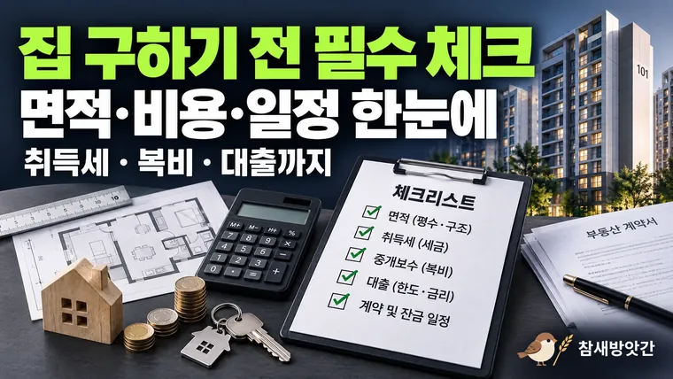

집 구하기 전 확인해야 할 체크리스트, 아파트 면적부터 취득세·중개보수까지
매물 검색, 현장 방문, 비용 계산, 계약 일정의 네 단계로 나눠 집 구하기 전에 확인할 항목을 체크리스트로 정리했습니다.

집을 구하는 과정에서는 생각보다 많은 정보를 확인해야 합니다. 아파트의 위치와 가격뿐 아니라 실제 사용할 수 있는 면적, 계약에 필요한 자금, 부동산 중개보수, 대출 상환액 등 여러 조건을 함께 살펴봐야 하기 때문입니다.
특히 처음 집을 알아보는 경우에는 매물을 검색할 때 중요하게 생각했던 항목을 실제 방문이나 계약 과정에서 놓치기도 합니다.
예를 들어 온라인 매물에서 확인한 평수만 기억하고 전용면적을 제대로 비교하지 않거나, 매매가격에만 집중하다가 취득세와 중개보수 같은 추가 비용을 뒤늦게 확인하는 경우가 있을 수 있습니다.
이러한 혼동을 줄이려면 집을 구하는 과정을 단계별로 나누고, 각 단계에서 확인해야 할 사항을 미리 정리해 두는 것이 좋습니다.
이번 글에서는 아파트 매물을 찾는 단계부터 현장 방문, 비용 계산, 계약 준비까지 활용할 수 있는 부동산 체크리스트를 소개합니다.
1. 매물 검색 단계에서는 가격과 면적의 기준부터 확인하기
온라인 부동산 매물 사이트에서 아파트를 검색할 때 가장 먼저 눈에 들어오는 정보는 매매가격과 면적입니다.
하지만 비슷한 가격대의 아파트라고 해서 실제로 사용할 수 있는 공간까지 비슷한 것은 아닙니다.
따라서 여러 매물을 비교할 때는 가격과 면적을 각각 동일한 기준으로 정리하는 것이 좋습니다.
전용면적과 공급면적을 구분하기
아파트 매물에 표시된 면적을 확인할 때는 전용면적과 공급면적을 구분해야 합니다.
전용면적은 세대 내부에서 독립적으로 사용하는 주거 공간의 면적을 의미하며, 공급면적은 전용면적에 주거공용면적을 더한 개념입니다.
예를 들어 전용면적 84㎡와 공급면적 112㎡는 서로 다른 아파트를 의미하는 숫자가 아니라, 동일한 주택을 서로 다른 면적 기준으로 나타낸 것일 수 있습니다.
따라서 아파트 두 곳의 면적을 비교할 때는 전용면적끼리, 공급면적끼리 비교하는 것이 좋습니다.
제곱미터와 평을 함께 기록하기
매물 정보를 확인할 때는 제곱미터와 평을 함께 기록하면 크기를 직관적으로 파악하기 편리합니다.
제곱미터를 평으로 환산할 때는 다음 공식을 활용할 수 있습니다.
평수 = 제곱미터 × 0.3025
예를 들어 전용면적 84㎡는 약 25.41평입니다.
다만 흔히 말하는 아파트의 평형은 공급면적을 기준으로 표현하는 경우가 많으므로 어떤 면적을 환산했는지 반드시 함께 표시해야 합니다.
매물 검색 단계 체크리스트
- [ ] 매매가격 또는 임대차 조건을 확인했는가?
- [ ] 전용면적과 공급면적을 구분했는가?
- [ ] 같은 기준으로 여러 아파트의 면적을 비교했는가?
- [ ] 관심 있는 매물의 층수와 방향을 확인했는가?
- [ ] 입주 가능 시점과 실제 거래 조건을 확인했는가?
이 단계에서는 모든 정보를 확정하기보다 비교할 매물을 일정한 기준으로 정리하는 것이 중요합니다.
2. 현장 방문에서는 숫자로 확인하기 어려운 공간을 살펴보기
온라인 매물 정보와 평면도만으로는 집의 실제 공간감을 완전히 파악하기 어렵습니다.
동일한 전용면적의 아파트라도 복도 구조와 창문 위치, 수납공간, 가구 배치 가능 여부에 따라 생활공간의 활용도가 달라질 수 있기 때문입니다.
따라서 관심 있는 매물을 직접 방문할 때는 단순히 집이 넓어 보이는지 판단하는 것보다 실제 생활을 가정하며 공간을 확인하는 것이 좋습니다.
가구를 배치할 수 있는 공간 확인하기
현재 사용하고 있는 침대나 소파, 식탁 등 주요 가구의 크기를 미리 알아두면 집을 방문할 때 도움이 됩니다.
예를 들어 침실이 넓어 보여도 침대를 배치한 뒤 옷장 문을 열 수 있는 공간이 충분하지 않을 수 있습니다.
거실 역시 소파와 TV를 배치했을 때 이동 동선이 확보되는지 확인하는 것이 좋습니다.
특히 복도나 모서리처럼 활용하기 어려운 공간이 얼마나 있는지도 함께 살펴보면 실제 생활공간을 이해하는 데 도움이 됩니다.
채광과 환기 상태 살펴보기
창문이 어느 방향으로 나 있는지, 주변 건물에 의해 채광이 가려지는지 등을 확인하는 것도 중요합니다.
가능하다면 낮 시간대에 방문해 자연광이 들어오는 상태를 직접 살펴보는 것이 좋습니다.
또한 창문을 열었을 때 환기가 가능한 구조인지, 주변 도로나 외부 시설에서 발생하는 소음이 어느 정도인지도 확인할 수 있습니다.
현장 방문 체크리스트
- [ ] 거실과 침실에 주요 가구를 배치할 수 있는가?
- [ ] 복도와 이동 동선이 지나치게 복잡하지 않은가?
- [ ] 수납공간이 생활 방식에 적합한가?
- [ ] 창문 위치와 채광 상태를 확인했는가?
- [ ] 환기와 외부 소음 상태를 살펴봤는가?
- [ ] 누수 흔적이나 벽면·천장 등 눈에 띄는 이상이 있는가?
- [ ] 평면도와 실제 내부 구조가 일치하는가?
현장 방문 시 확인한 내용을 매물별로 기록해 두면 여러 아파트를 비교할 때 기억에만 의존하지 않아도 됩니다.
3. 계약 전에는 매매가격 외에 필요한 비용을 계산하기
관심 있는 아파트를 정했다면 다음으로 확인해야 할 것은 실제 거래에 필요한 비용입니다.
아파트 매매에서는 매매대금 외에도 취득 관련 세금과 중개보수, 등기 관련 비용, 이사 비용 등이 발생할 수 있습니다.
따라서 매매가격만으로 자금계획을 세우기보다 예상 비용을 항목별로 정리하는 것이 좋습니다.
취득세와 중개보수 확인하기
취득세는 주택의 취득가격과 취득 조건 등에 따라 달라질 수 있습니다.
주택 수와 감면 적용 여부 등도 실제 세액에 영향을 줄 수 있으므로 취득세 계산기를 활용해 예상 금액을 확인한 뒤, 최종적으로 적용되는 기준을 별도로 확인해야 합니다.
중개보수 역시 거래금액과 거래 유형에 따라 상한요율이 정해져 있습니다.
다만 계산기에 표시된 상한액이 반드시 실제 지급해야 하는 고정 금액은 아닙니다. 법정 상한 범위 안에서 협의한 금액과 부가가치세 포함 여부를 함께 확인하는 것이 좋습니다.
대출금액과 월 상환액 구분하기
주택담보대출을 이용할 계획이라면 예상 대출금액과 매달 납부할 원리금을 구분해서 확인해야 합니다.
대출 가능 금액을 알아보는 과정에서는 LTV와 DSR 등 관련 기준을 이해하는 것이 도움이 됩니다.
다만 실제 대출 가능 여부와 승인 금액은 금융기관의 심사 결과에 따라 달라질 수 있습니다.
주택담보대출 계산기는 예상 대출금액과 금리, 기간, 상환 방식을 입력해 월 납입금과 총이자를 확인하는 용도로 활용할 수 있습니다.
계약 전 비용 체크리스트
| 확인 항목 | 점검할 내용 |
|---|---|
| 매매대금 | 실제 계약 예정 금액 |
| 취득 관련 세금 | 예상 세액 및 감면 적용 여부 |
| 중개보수 | 상한액과 실제 협의 금액 |
| 부가가치세 | 중개보수에 포함되어 있는지 여부 |
| 등기 관련 비용 | 예상 비용과 진행 방식 |
| 주택담보대출 | 심사 진행 상태 및 실행 예정일 |
| 월 상환액 | 예상 원리금과 상환 기간 |
| 이사·입주 비용 | 이사, 청소 등 추가 지출 |
이러한 항목을 한곳에 모아두면 예상 비용과 실제 확정된 비용을 비교하기 편리합니다.
4. 계약서 작성부터 잔금일까지 확인해야 할 사항
매물과 비용을 충분히 검토했다면 실제 계약 과정에서 필요한 내용을 확인해야 합니다.
이 단계에서는 앞서 계산한 예상 금액뿐 아니라 계약서에 기재되는 조건과 실제 지급 일정이 일치하는지 살펴보는 것이 중요합니다.
특히 계약금과 중도금, 잔금의 지급일을 구분하고 각 날짜에 사용할 수 있는 자금이 충분한지 확인해야 합니다.
계약서에 기재된 내용 확인하기
부동산 매매계약서에는 거래 대상 부동산의 표시와 매매대금, 지급 일정, 특약사항 등이 기재됩니다.
계약 전에는 등기사항증명서 등 관련 서류를 통해 거래 대상과 권리관계에 관한 정보를 확인하고, 계약서에 기재된 내용이 실제 협의한 조건과 일치하는지 살펴보는 것이 좋습니다.
확인되지 않은 사항이 있다면 서명하기 전에 설명을 요청하고 필요한 내용을 명확하게 정리해야 합니다.
지급 일정과 자금 확보 상태 점검하기
예를 들어 매매가격 5억 원인 아파트를 계약하면서 계약금 5천만 원, 중도금 5천만 원, 잔금 4억 원을 지급하기로 약정했다고 가정하겠습니다.
이 경우 전체 자금이 충분한지도 중요하지만, 계약금과 중도금 지급일에 실제 사용할 수 있는 현금이 마련되어 있는지도 확인해야 합니다.
주택담보대출을 잔금일에 실행할 계획이라면 해당 날짜에 대출금이 지급될 수 있는지 금융기관과 별도로 확인해야 합니다.
최종 계약 준비 체크리스트
- [ ] 거래 대상 부동산과 관련 서류를 확인했는가?
- [ ] 계약서의 매매대금과 지급 일정이 협의 내용과 일치하는가?
- [ ] 특약사항 중 이해하지 못한 내용은 없는가?
- [ ] 계약금·중도금·잔금 지급에 필요한 자금을 구분했는가?
- [ ] 대출 예정 금액과 실행 일정을 확인했는가?
- [ ] 중개보수의 최종 금액과 지급 시점을 확인했는가?
- [ ] 취득 관련 세금의 신고·납부 일정을 확인했는가?
- [ ] 계약서와 비용 지급 증빙을 보관할 준비가 되었는가?
위 항목은 일반적인 주택 매매를 준비할 때 참고할 수 있는 기본 체크리스트입니다.
실제 거래에서는 부동산의 권리관계와 계약 조건 등에 따라 추가로 확인해야 할 사항이 발생할 수 있습니다.
마무리: 집 구하기는 면적·비용·일정을 함께 확인하는 과정이다
집을 구할 때는 마음에 드는 아파트를 찾는 것만큼 실제 거래에 필요한 정보를 체계적으로 확인하는 것이 중요합니다.
매물 검색 단계에서는 전용면적과 공급면적을 구분하고, 현장 방문에서는 공간 구조와 생활 동선을 살펴보는 것이 좋습니다.
계약 전에는 취득세와 중개보수, 대출 상환액 등 매매가격 외에 필요한 비용을 정리해야 합니다. 이후에는 계약금과 중도금, 잔금 지급 일정에 맞춰 자금 확보 상태를 확인할 필요가 있습니다.
이처럼 면적과 비용, 계약 일정을 단계별로 나누어 점검하면 여러 매물을 비교하거나 자금계획을 세울 때 중요한 사항을 놓칠 가능성을 줄일 수 있습니다.
부동산 계산기는 각각의 예상 금액을 확인하는 도구로 활용하고, 실제 계약과 관련된 최종 조건은 공식 자료와 계약서, 관계 기관의 안내를 통해 확인하는 것이 좋습니다.
- 국토교통부 실거래가 공개시스템: 부동산 거래가격 참고 자료
- 정부24: 건축물대장 등 부동산 관련 공부 확인
- 인터넷등기소: 등기사항증명서 열람 및 발급
- 위택스(WETAX): 취득세 등 지방세 관련 정보
- 국가법령정보센터: 「공인중개사법」 및 「지방세법」 등 관련 규정
- 한국주택금융공사: 주택담보대출 관련 정보
※ 본문은 일반적인 아파트 매매 준비 과정을 정리한 정보성 콘텐츠입니다. 실제 거래에 필요한 확인 사항과 비용은 부동산의 상태, 계약 조건, 적용 시점의 규정 등에 따라 달라질 수 있습니다.
이 글의 내용은 일반적인 아파트 매매 준비 과정을 정리한 2026년 10월 기준 정보입니다. 실제 거래의 확인 사항과 비용은 계약 조건과 적용 시점의 규정에 따라 달라질 수 있습니다. 계산 결과는 참고용입니다.
자주 묻는 질문
관심 있는 지역과 매매가격 범위를 정한 뒤, 매물의 전용면적과 공급면적을 구분해 확인하는 것이 좋습니다. 이후 현장 방문을 통해 실제 공간 구조와 생활 여건을 살펴보면 여러 매물을 비교하는 데 도움이 됩니다.
일반적으로 취득 관련 세금, 중개보수, 등기 관련 비용, 이사 및 입주 준비 비용 등이 발생할 수 있습니다. 실제 비용은 개별 거래 조건에 따라 달라지므로 예상 금액을 항목별로 정리하는 것이 좋습니다.
계산기는 예상 비용과 상환액을 파악하는 데 도움이 되지만, 실제 적용 금액을 확정하는 자료는 아닙니다. 취득세와 중개보수, 대출 조건 등은 관련 규정과 계약 내용, 금융기관의 심사 결과 등을 통해 최종 확인해야 합니다.
매물을 검색하는 단계부터 쓰는 것이 좋습니다. 면적 기준을 정리하고, 현장 방문에서 구조를 확인하고, 계약 전에 비용을 계산하는 순서로 이어서 점검하세요.